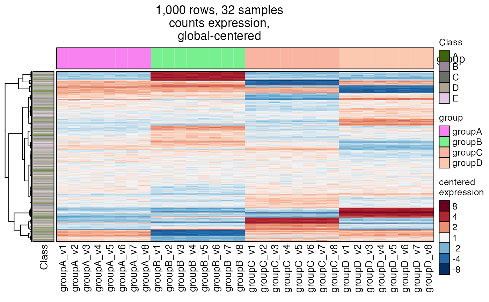
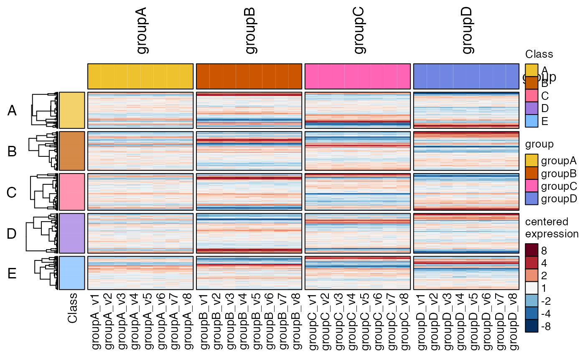
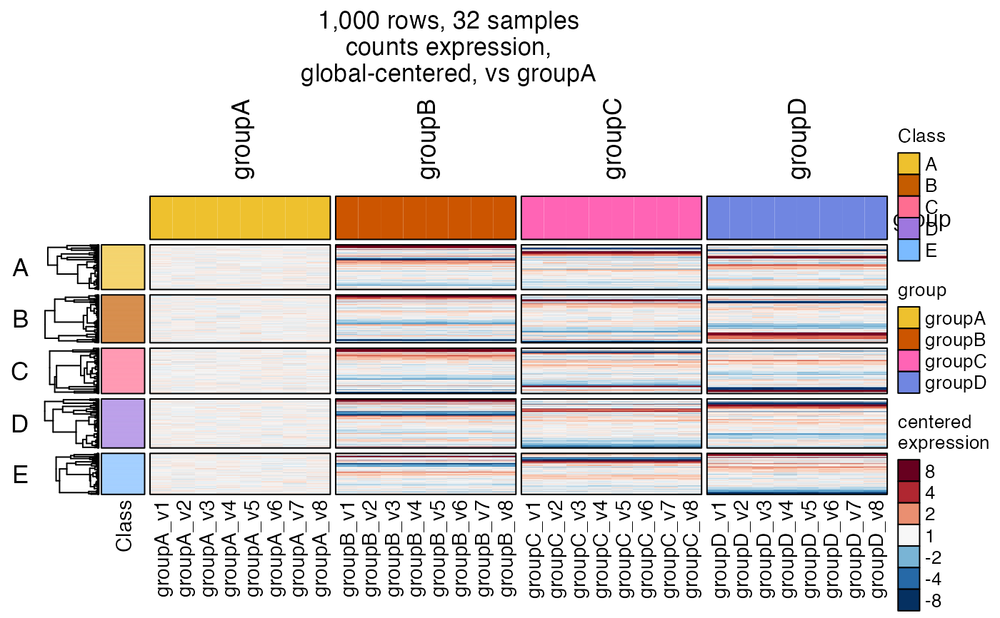
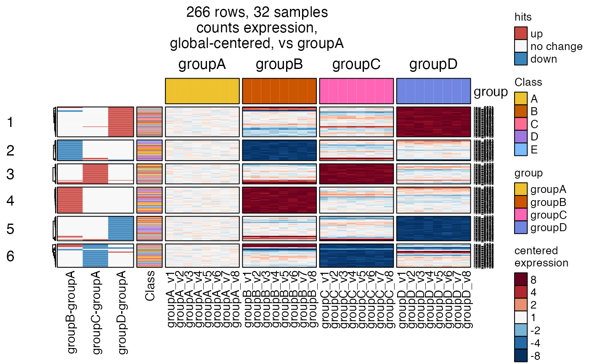
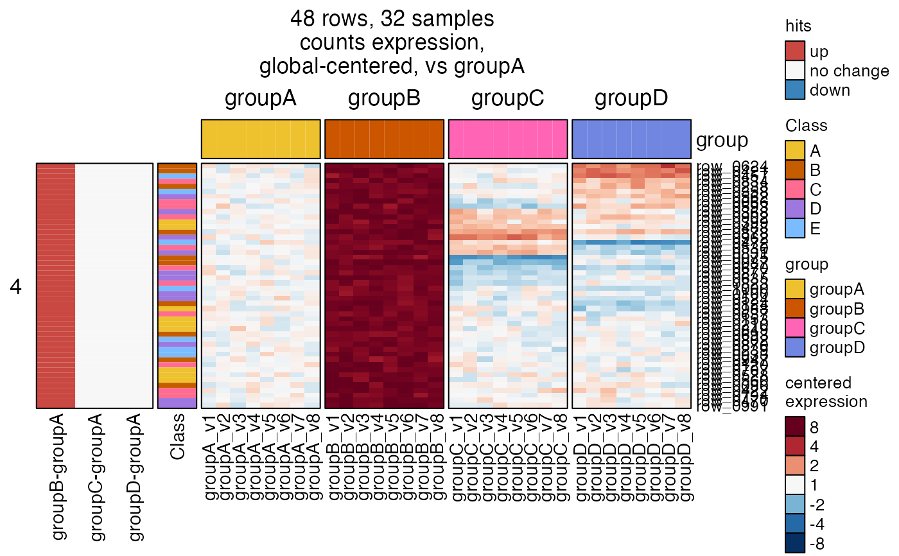
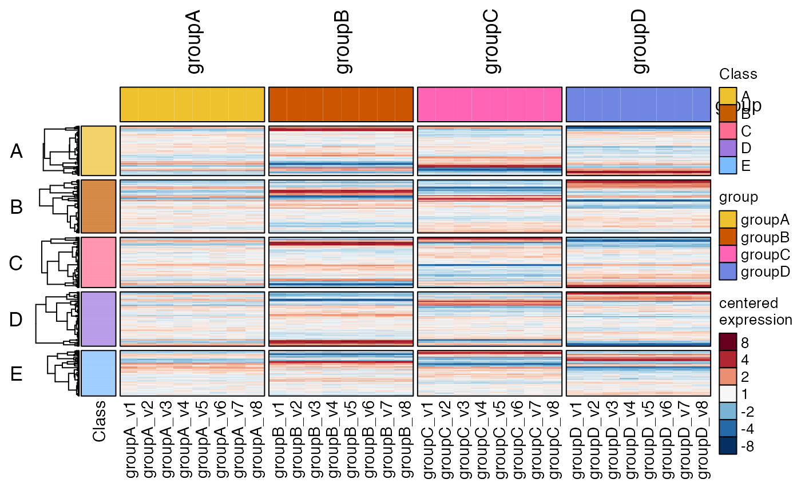
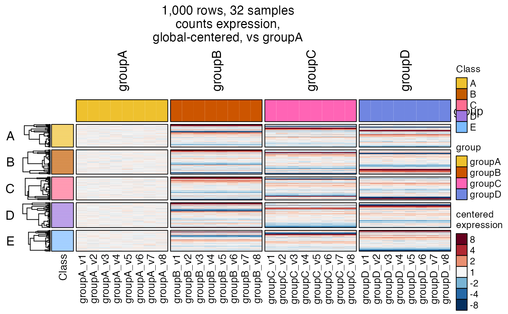
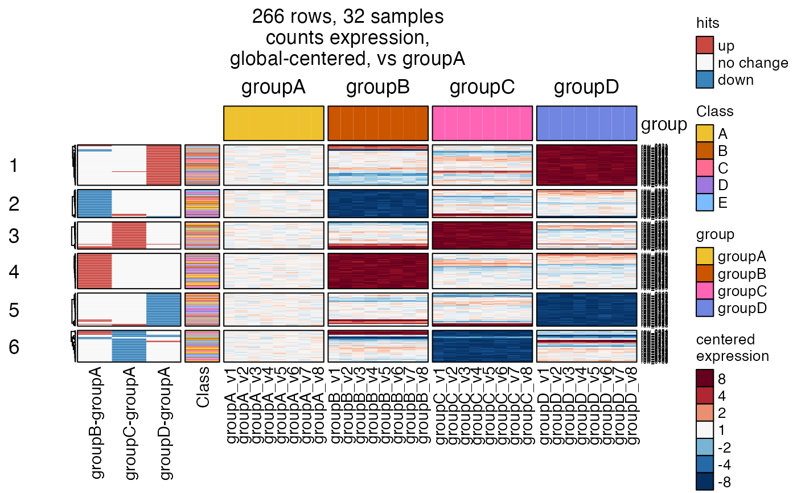
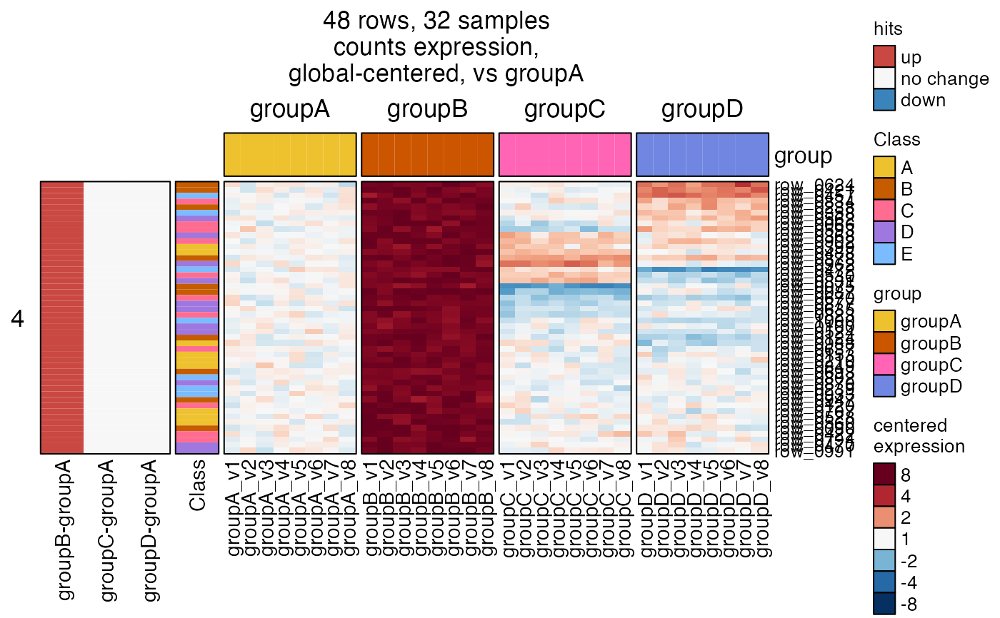

Heatmap for SummarizedExperiment data
Usage
heatmap_se(
se,
sestats = NULL,
hm_name = NULL,
hm_title = NULL,
rows = NULL,
row_type = "rows",
column_type = "samples",
data_type = "expression",
correlation = FALSE,
assay_name = NULL,
contrast_names = NULL,
contrast_suffix = "",
cutoff_name = NULL,
alt_sestats = NULL,
alt_assay_name = assay_name,
alt_contrast_names = NULL,
alt_contrast_suffix = "",
alt_cutoff_name = NULL,
isamples = colnames(se),
normgroup_colname = NULL,
centerby_colnames = NULL,
controlSamples = NULL,
control_label = "",
controlFloor = NA,
naControlAction = c("na", "row", "floor", "min"),
naControlFloor = 0,
top_colnames = NULL,
top_annotation = NULL,
top_annotation_name_gp = grid::gpar(),
rowData_colnames = NULL,
left_annotation = NULL,
left_annotation_name_gp = grid::gpar(),
left_annotation_name_rot = 90,
right_annotation = NULL,
simple_anno_size = grid::unit(8, "mm"),
legend_title_gp = grid::gpar(fontsize = 10),
legend_labels_gp = grid::gpar(fontsize = 10),
legend_grid_cex = 1,
row_names_gp = NULL,
row_split = NULL,
row_subcluster = NULL,
row_title_rot = 0,
sample_color_list = NULL,
legend_at = NULL,
legend_labels = NULL,
subset_legend_colors = TRUE,
row_cex = 0.8,
column_cex = 1,
row_anno_fontsize = 11,
useMedian = FALSE,
show_row_names = NULL,
show_row_dend = length(rows) < 2000,
mark_rows = NULL,
mark_labels_gp = grid::gpar(),
column_title = character(0),
apply_hm_column_title = FALSE,
hm_title_buffer = 0,
show_heatmap_legend = TRUE,
show_top_legend = TRUE,
show_left_legend = TRUE,
legend_border_color = "black",
show_top_annotation_name = TRUE,
show_left_annotation_name = TRUE,
row_label_colname = NULL,
cluster_columns = FALSE,
cluster_column_slices = FALSE,
cluster_rows = function(x, ...) {
amap::hcluster(jamba::rmNA(naValue = 0, x), ...,
method = "euclidean", link = "ward")
},
cluster_row_slices = FALSE,
column_names_gp = NULL,
column_split = NULL,
column_split_sep = ",",
color_max = 3,
color_floor = 0,
lens = 2,
rename_contrasts = TRUE,
rename_alt_contrasts = TRUE,
use_raster = TRUE,
verbose = FALSE,
debug = FALSE,
...
)Arguments
- se
SummarizedExperimentby default, or one of the following:SummarizedExperimentwith accessor functionsrowData(),colData(), andassays(). It will usevalues(rowRanges())if no slotrowDataexists.SingleCellExperimentwith accessor functionsrowData(),colData(), andassays(). It will usevalues(rowRanges())if no slotrowDataexists.Seuratobject, which is coerced toSingleCellExperimentand handled accordinglyExpressionSetor compatible object with accessor functionsfeatureData(),phenoData(), andassayData().
- sestats
one of the following types of data:
listoutput fromse_contrast_stats(), which specifically containshit_arrayas a 3-dimensional array of hits with dimensions "Cutoffs", "Contrasts", "Signal".numericmatrix intended to represent an incidence matrix, where a value0indicates absence, and non-zero indicates presence. This format is useful for supplying any incidence matrix, such as gene-by-pathway (for example Github package "jmw86069/multienrichjam" providesmem$memIMwith gene-by-pathway matrix), or gene-by-class (see Github package "jmw86069/pajam" for examples using ProteinAtlas protein classification, including membrane-bound, secreted, transcription factors, etc.), or any incidence matrix defined by Github "jmw86069/venndir" functionlist2im_value()orlist2im()which converts input to a Venn diagram into an incidence matrix.When
sestatsis supplied, data is converted to incidence matrix, then columns are matched withcontrast_names. All rows with non-zero entry in those columns are included in the heatmap. Whenrowsis also supplied, then the intersection of incidence matrix rows androwsis displayed in the heatmap.Note that
alt_sestatsdoes not subset rows displayed in the heatmap.
- hm_name
characterstring, orNULL(default) which uses thedata_typevalue. Note that the legend title uses thedata_type, and is also used forhm_namewhenhm_name=NULL. Thehm_nameis most useful to customize because this string is used as the prefix for grid graphical components, for example seen withComplexHeatmap::list_components(). When two heatmaps or aHeatmapListis drawn, the names can be used to define specific grid regions of each heatmap. If the heatmaps share the samehm_namethen the regions will also have identical name and cannot be addressed distinctly.- hm_title
characterstring, orNULL(default) which generates a heatmap title using the dimensions,assay_name,data_type, and a string which describes the data centering. When provided as acharacterstring, it is used as-is. (In future this value may accept variable names.)- rows
charactervector ofrownames(se)to define a specific set of rows to display. Whensestatsis supplied, then the intersection ofrowswith genes defined bysestatsis displayed. Note that rows are required to be inrownames(se), all other rows are dropped.- row_type
characterstring used in the title of the heatmap which indicates how many rows are displayed. For example"1,234 genes detected above background"or"1,234 DEGs by limma-voom". Whenrow_type=""orrow_type=NULLthis information is not included in the heatmap title.- column_type
characterstring used in the title of the heatmap which indicates how many column are displayed. For example"12 samples"or"12 biological replicates". Whencolumn_type=""orcolumn_type=NULLthis information is not included in the heatmap title.- data_type
characterstring used as title of the heatmap color gradient legend, for example"expression"indicates the data contains gene expression measurements. Notes:The prefix
"centered"is automatically appended whenever the data is also centered for the heatmap. Setcenterby_colnames=FALSEto display data that is not centered.The prefix
"correlation of"is automatically appended whencorrelation=TRUEwhich displays correlation of whatever data is included in the heatmap.
- correlation
logicalindicating whether to calculate sample correlation, and plot a sample-by-sample correlation heatmap. This option is included here since many of the same arguments are required for data centering, and sample annotations. Note thatcolor_maxis forced to a maximum value of1.0, representing the maximum correlation value.- assay_name
characterstring indicating the name inassays(se)to use for data to be displayed in the heatmap.When multiple
assay_namevalues are supplied, the first assay_name that matchesnames(assays(se))will be used in the heatmap. In this way, multipleassay_namescan be supplied to define statistical hits insestats, which callshit_array_to_list()to combine hits acrossassay_nameentries; but only the firstassay_namefound inseis used for the heatmap values.When there is only one value for
assayNames(se), thenassay_namewill default to this value, instead of acting like it couldn't possibly know what was intended. Haha.Lastly,
assay_namecan be anumericindex, helpful in caseassays(se)contains no names - not recommended but it can happen.
- contrast_names
charactervector of contrasts insestats$hit_arrayto use for the heatmap. Whencontrast_names=NULLthen all contrasts are displayed, which is the default.- contrast_suffix
characterstring with optional suffix to append to the end of each contrast name label forsestatshit incidence matrix beside the heatmap. This suffix may be useful when comparing two methods for the same set of contrast names, withsestatsandalt_sestats.- cutoff_name
characterorintegerindex used to define the specific statistical cutoffs to use fromsestats$hit_array. This argument is passed tohit_array_to_list()ascutoff_names.- alt_sestats, alt_assay_name, alt_contrast_names, alt_contrast_suffix
arguments analogous to those described above for
sestatswhich are used whenalt_sestatsis supplied.- isamples
charactervector ofcolnames(se)used to visualize a subset of samples used for the data centering step. Note that data centering uses all columns supplied inse, and after centering, the subset of columns defined inisamplesis displayed in the heatmap. This distinction makes it possible to center data by some control group, then optionally not display the control group data.- normgroup_colname
charactervector of colnames incolData(se)used during data centering. When supplied, samples are centered independently within each normgroup grouping. These values are equivalent to usingcenterby_colnames.- centerby_colnames
either:
charactervector of colnames incolData(se)used during data centering. When supplied, samples are centered independently within each centerby grouping. It is typically used for things like cell lines, to center each cell line by a time point control, or untreated control.NULLto perform centering across all columns inse.FALSEto disable centering.
- controlSamples
characteroptional vector of samples to use as the reference during data centering. Note that samples are still centered within each normgroup and centerby grouping, and within that grouping samples are centered to thecontrolSampleswhich are present in that grouping. Any center group for which no samples are defined incontrolSampleswill use all samples in that center group. Typically,controlSamplesis used to define a specific group as the reference for centering, so changes are displayed relative to that group. Make sure to definecontrol_nameto include an appropriate label in the heatmap title.- control_label
characterstring used in heatmap title to describe the control used during data centering, relevant whencontrolSamplesis also supplied. Recommended format:"versus Wildtype"or"vs. Wildtype". The heatmap title will include data centering andcontrol_labelin this format:"centered within {centerby_colnames}, {control_label}", for example"centered within Genotype/Time, versus Vehicle".- controlFloor, naControlAction, naControlFloor
passed to
jamma::centerGeneData()to customize data centering.controlFloorimposes an optional noise floor to control group mean/median values, so the summary value during centering is at leastcontrolFloor. Useful for defining an effective noise floor for a platform technology.naControlActiondefines the action taken only when values for all control samples areNA.naControlFlooris anumericvalue used whennaControlAction="floor", which causes the group reference value to use the value provided innaControlFloor.
- top_colnames
one of the following types:
charactervector of colnames to use fromcolData(se)as annotations to display intop_annotationabove the heatmap.NULL, will callchoose_annotation_colnames()to detect reasonable colnames: columns with more than one unique value; columns with at least one duplicated value.FALSEwill hide thetop_colnames, which also occurs whencolData(se)is empty.
- top_annotation
specific heatmap annotation as defined by
ComplexHeatmap::HeatmapAnnotation(). When supplied, thetop_colnamesdescribed above is not used.- top_annotation_name_gp
grid::gparobject to customize the annotation name displayed beside the top annotation.- rowData_colnames
charactervector of colnames inrowData(se)to use for heatmap annotations displayed on the left side of the heatmap. Specific colors can be included insample_color_listas a namedlistof color vectors or color functions. The names of this list must match colnames to be displayed, otherwiseComplexHeatmap::Heatmap()will define its own color function.- left_annotation
specific heatmap annotation as defined by
ComplexHeatmap::rowAnnotation(). When supplied, therowData_colnamesandsestatsrow annotations are not displayed. In order to supply custom row annotations and not loseleft_annotationdefined above, supply the row annotations asright_annotation.- left_annotation_name_gp
grid::gparobject to customize the annotation name displayed beside the left annotation.- left_annotation_name_rot
numericrotation of left annotation label, in degrees, where0indicates normal text, and90is rotated vertically.- right_annotation
specific heatmap annotation as defined by
ComplexHeatmap::HeatmapAnnotation(). This element is created automatically whenmark_rowsis supplied.- simple_anno_size
grid::unitsize used to define heatmap annotation sizes (height or width of each line) for any simple annotations.- legend_title_gp
grid::gparto customize the legend title fonts, applied to each legend: top annotation, left annotation, main heatmap.- legend_labels_gp
grid::gparto customize the legend label fonts, applied to each legend: top annotation, left annotation, main heatmap.- legend_grid_cex
numericmultiplied to adjust the relative size of each legend grid unit, applied to each relevant metric.- row_names_gp
gparto define custom column name settings. When"fontsize"is not defined, the automatic font size calculation is added to therow_names_gpsupplied.- row_split
is used to define heatmap split by row, ultimately passed to
ComplexHeatmap::Heatmap()argumentrow_split. However, the input type can vary:integernumber of row splits based upon row clustering. Ifrow_splitis greater than the number of rows, it will be set to the number of rows.charactervalue or values in colnames ofrowData(se)to split using row annotation inse.data.framewhoserownames()must contain all rows to be displayed in the heatmap. This argument is passed directly toComplexHeatmap::Heatmap()to apply the split appropriately.characterorfactorvector named byrownames(se)with another custom row split, passed directly toComplexHeatmap::Heatmap()argumentrow_split, with proper order for rows being displayed
- row_subcluster
integerorcharactervector representing one or more elements returned byrow_splitto use as a drill-down sub-cluster heatmap. This argument is experimental, and is intended to make it easy to "drill down" into specific row clusters.The process internally creates a full heatmap using all arguments as defined, then extracts the
jamba::heatmap_row_order()which contains row split data in alistof rownames vectors. Thelistelements that matchrow_subclusterare extracted and used again for a subsequent heatmap, and are displayed in the same order in which they appear in the original full heatmap - which meanscluster_rows=FALSEis defined at this point. Howeverrow_splitis retained for this subset of rows, to indicate the original row split annotation.Note that
row_subclustermust match thenames()returned byjamba::heatmap_row_order()for the full heatmap, or should include anumericindex for thelistelement or elements to use.In principle this process would be run in two stages: First, view a heatmap with
row_split=6, then re-run the same heatmap withrow_subcluster=4to see cluster number 4 from the full heatmap.
- row_title_rot
numericvalue indicating text rotation in degrees to use for row titles.- sample_color_list
named
listof color vectors or color functions, where names correspond to colnames in eithercolData(se)orrowData(se), and which are passed to corresponding left or top annotation functions. When colors are not defined,ComplexHeatmap::Heatmap()will define colors using its own internal function.- legend_at, legend_labels
numericandcharacter, respectively, to define custom values for the heatmap color gradient legend.When
legend_atis supplied, it is used as provided.When
legend_labelsis supplied, it is used only when its length equalslength(legend_at), in which case it is used as provided.When
centerby_colnames=FALSEand the matrix data does not contain negative values,legend_atuses integers from0tocolor_max, to avoid presenting a color legend with unnecessary negative values. However, whencolor_max <= 1it usespretty(c(0, color_max)), removing extraneous values, then ensuring the maximum value iscolor_max. For example whencolor_max=0.85, thelegend_atis likely to bec(0, 0.2, 0.4, 0.6, 0.8, 0.85).When
centerby_colnamesis notFALSE, and/or data contains negative values, thelegend_atis symmetric above and below zero. Whencolor_max <= 1the label is created usingpretty(c(-color_max, color_max)), as described above, socolor_maxis used as the minimum and maximum value. Whencolor_max > 1thelegend_atuses integer steps.When
color_max <= 1thelegend_labelsare presented as-is with no transformation.When
color_max > 1thelegend_labelsare transformed withexp2signed(x)which is the inverse oflog2(1 + x). This inverse tranform displays normal space values, in the case of centered data, the values represent normal space fold changes. For example thelegend_at=c(-2, -1, 0, 1, 2)would result inlegend_labels=c("-4", "-2", "1", "2", "4").When
correlation=TRUEthelegend_labelsby default uselegend_at, following rules forcolor_max <= 1above. Otherwise,legend_labelsvalues inverse transformed fromlog2(1 + x)in order to display normal space fold change values,To override any of this behavior, supply both
legend_atand correspondinglegend_labels.
- subset_legend_colors
logicalindicating whether to subset colors shown in the color key defined bysample_color_list, which is useful when the heatmap only represents a subset of categorical color values.When
subset_legend_colors == TRUE, the color key will only include colors shown in thetop_annotation.When
subset_legend_colors == FALSEall colors defined insample_color_listwill be included for each relevant column.
- row_cex, column_cex
numericvalues used to adjust the row and column name font size, relative to the automatic adjustment that is already done based upon the number of rows and columns being displayed.- row_anno_fontsize
numericbase font size for row annotation labels. This value is only used whenleft_annotation_name_gpis not supplied. Note these labels appears underneath row annotations, alongside column labels, and therefore they are also adjusted by multiplyingcolumn_cexso these labels are adjusted together.- useMedian
logicalpassed tojamma::centerGeneData()during data centering.- show_row_names, show_row_dend
logicalindicating whether to display row names, and row dendrogram, respectively. With more than 2,000 rows this step can become somewhat slow.- mark_rows
charactervector of values inrownames(se)that should be labeled usingComplexHeatmap::anno_mark()in call-out style. Usually this argument is used whenshow_row_names=FALSE, hiding the row labels, but is not required. Values inmark_rowsare intersected with rows displayed in the heatmap, therefore only matching entries will be labeled.- mark_labels_gp
grid::gparto customize the font used by labels whenmark_rowsis supplied.- column_title
characteroptional title to include at the top of the heatmap. It can include a single value, or multiple values representing eachcolumn_splitin the order they appear.Note: This argument is ignored when
apply_hm_column_title=TRUE.When
column_title=character(0)(default) orcolumn_title="", theComplexHeatmap::Heatmap()uses its usual default behavior, which is to assigncolumn_titleusingcolumn_splitvalues when they are being used.
- apply_hm_column_title
logical(default FALSE) whether to apply the heatmap title tocolumn_title. This option makes it convenient to display the title atop the heatmap without additional effort, however it hides any othercolumn_titlecreated by usingcolumn_split. When using bothcolumn_splitandapply_hm_column_title=TRUEit may be useful to callheatmap_column_group_labels().- hm_title_buffer
numericnumber of whitespace lines to add to the heatmap title(attr(hm, "hm_title")between the title and the heatmap below it. This whitespace can be useful when also callingheatmap_column_group_labels(), to provide enough space to draw the additional annotations.- show_heatmap_legend, show_left_legend, show_top_legend
logicalindicating whether each legend should be displayed. Sometimes there are too many annotations, and the color legends can overwhelm the figure. Note thatshow_left_legendis applied in a specific order, with these rules:show_left_legendis extended to at least length 2, then values are used in order for:sestats,rowData_colnames, in order, using whichever is defined.If
sestatsis defined, the first value inshow_left_legendis used for this annotation, then the remaining values are used forrowData_colnames. Setting the firstshow_left_legendvalue toFALSEwill ensure the legend forsestatsis not displayed.If
rowData_colnamesis defined, then the remaining values inshow_left_legendare recycled for all columns inrowData_colnames, and applied in order. In this way, individual columns can have the legend displayed or hidden.If
alt_sestatsis defined, the legend is always hidden, in favor of showing only the legend forsestatswithout duplicating this legend.
- legend_border_color
charactercolor used as border color tofor be used as a border color for the various legend colors. Note this argument recognizes only the first color provided, and does not recycle different colors across the various legend borders.- show_top_annotation_name, show_left_annotation_name
logicalindicating whether to display the annotation name beside the top and left annotations, respectively.- row_label_colname
characterstring used as a row label, where this value is a colname inrowData(se). It is useful when rownames are some identifier that is not user-friendly, and where another column in the data may provide a more helpful label, for example"SYMBOL"to display gene symbol instead of accession number.- cluster_columns, cluster_rows
logicalindicating whether to cluster columns by hierarchical clustering; orfunctionwith a specific function that produceshclustordendrogramoutput, given anumericmatrix. Note thatcluster_rowsdefault will replaceNAvalues with zero0to avoid errors with missing data, and usesamap::hcluster()by default which is a one-step compiled process to perform distance calculation and hierarchical clustering.- column_names_gp
gparto define custom column name settings. When"fontsize"is not defined, the automatic font size calculation is added to thecolumn_names_gpsupplied.- column_split
characterorintegervector used to define heatmap column split.- column_split_sep
characterstring used as delimited whencolumn_splitdefines multiple split levels.- color_max
numericvalue passed tocolorjam::col_div_xf()which defines the upper limit of color gradient used in the heatmap.- color_floor
numericvalue passed tocolorjam::col_div_xf()argumentfloorwhich defines the minimum non-zero numeric value for a color to be applied. This option is available to prevent coloring values below thecolor_floorwhich can be useful in some circumstances.- lens
numericvalue passed tocolorjam::col_div_xf()to control the intensity of color gradient applied to the numeric range.- rename_contrasts, rename_alt_contrasts
logical(default TRUE) whether to rename long contrast names insestatsandalt_sestatsusingcontrast2comp().- use_raster
logicalpassed toComplexHeatmap::Heatmap()to determine whether heatmaps should be converted to raster images, which effectively turns each heatmap panel into a single graphical object. Recommenduse_raster=TRUEand also installing R packagemagickwhich greatly enhances speed and quality of rasterized heatmap output. Whenmagickis not available, it may be best to useuse_raster=FALSE. Whenuse_raster=FALSEeach pixel square of a heatmap is its own graphical object. For heatmaps with very large dimensions, having each pixel as an object can make the heatmap extremely large in memory, and sometimes pixels can overlap others because the minimum pixel size of the output graphics device does not reflect the actual size of each pixel.- verbose
logicalindicating whether to print verbose output.- debug
logicalindicating debug mode, data is returned in alist:hmobjectComplexHeatmap::Heatmaptop_annotationobjectComplexHeatmap::HeatmapAnnotationfor columnsleft_annotationobjectComplexHeatmap::HeatmapAnnotationfor rowshm_titleobjectcharacterstring with the heatmap title.
- ...
additional arguments are passed to supporting functions.
Details
Note: Still a work in progress. This function is the basis for the majority of heatmaps created for Omics data.
This function is a bold attempt to simplify the intricate task
of creating an expression heatmap, using ComplexHeatmap::Heatmap(),
given a SummarizedExperiment object.
It attempts to enable:
selection of
assays(se)to use in the heatmapuse of
rowData(se)orcolData(se)to produce row and column annotations, respectively.re-use of defined colors for annotations, see
platjam::design2colors()define and adjust heatmap color gradient and scale
data centering by row: versus all columns, or specific controls, optionally within independent centering groups
filtering rows to show only the statistical hits
display annotation of statistical hits beside the heatmap
split rows or columns using
rowData(se)andcolData(se), respectivelyheatmap title to display key options used, for easy reference
Additional Features
data centering can be disabled with
centerby_colnames=FALSE.alternative hits can be displayed using
alt_sestats. It does not subset heatmap rows, it inherits rows fromsestats.display a subset of columns after row centering, useful to hide the control group for certain figures.
option to display correlation heatmap, using the same data centering, then calculates Pearson correlation across sample columns.
labels and legend grids can be customized to exact sizes with
grid::gpar()andgrid::unit()definitions, for manuscript figures.mark annotations option to label a subset of rows
row subclusters can be visualized using
row_subclusterto drill down into specific subclusters from hierarchical clustering, k-means clustering, or anyrow_split.
Data Centering
The intent is to display expression values from assays(se),
centered across all columns, or with customization defined by
centerby_colnames and normgroup_colnames. The resulting centered
data can be subsetted by argument isamples, which occurs after
centering in order to decouple the centering step from the display
of resulting data. To subset samples involved in centering itself,
either subset the input se data, or supply controlSamples to
define a subset of samples used as the baseline in centering.
See jamma::centerGeneData() for more details.
Paired data, also called repeated measures data, can be visualized
by including the pairing as centerby_colnames so that centering
is calculated within each pairing subgroup. In this case if also using
controlSamples to define a "time zero" or "baseline", then all
baseline samples will have exactly zero, if there is only one replicate
per pairing group at the baseline. In this case, it may be useful
to create the full heatmap once to confirm the centering is performing
as intended, then create a second heatmap using isamples to show only
the non-baseline samples - thus removing the large chunk of values with 0.
Note: data centering can be disabled with centerby_colnames=FALSE.
Heatmap Title
A heatmap title is returned as an attribute attr(hm, "hm_title"),
which describes:
total rows displayed, with
row_typeindicating the measured entity (gene, probe, DEGs, etc.)total columns displayed, with
column_typeindicating the sampled entity (samples, total replicates, etc.)the
assay_namefor the data being displayedrelevant options for data centering, for example
"global-centered"(by default) or"Centered within Cell Line, versus Wildtype"
To include the heatmap title:
ComplexHeatmap::draw(hm, column_title=attr(hm, "hm_title))
Top and Left Annotations
The top heatmap annotations use colData(se) with user-supplied
top_colnames or by auto-detecting those colnames that apply
to multiple colnames(se).
Colors can be supplied using argument sample_color_list, as
described below.
The an incidence matrix of statistical hits can be displayed
on the left of the heatmap, using arguments sestats and alt_sestats.
These arguments can accept either the output of se_contrast_stats(),
or they can be a numeric matrix with values c(-1, 0, 1), indicating
statistical hits down, no change, and up, respectively.
The contrasts can optionally be subset with contrast_names,
which corresponds to columns in the matrix if supplied in that format.
When sestats is supplied, it will subset all heatmap rows to include
only rows with at least one non-zero value in the incidence matrix.
If argument rows is supplied, then all rownames(se) matching
rows are displayed, regardless of statistical hits.
For comparison across other sestats results, argument alt_sestats
is treated similar to sestats except that the heatmap is not subset
based upon these values. That means the heatmap will be subset to
match hits defined by sestats but not alt_sestats.
The alt_sestats incidence matrix is displayed to the far left
of the sestats incidence matrix. For clarity, it can be useful to
add alt_sestats_suffix to add a suffix to each contrast label,
for example if sestats represents limma hits, use
sestats_suffix=" limma", and if alt_sestats represents limma-voom
hits, use alt_sestats_suffix=" limmavoom".
Argument rowData_colnames can be supplied, which enables display of
rowData(se) annotations in the left_annotation of the heatmap.
Colors can be supplied using argument sample_color_list.
Argument sample_color_list is a list named by each annotation column
to be displayed as top or left annotation. Each list element is either:
a
charactervector of R colors named bycharactervalue, ora
functiondefined bycirclize::colorRamp2()to be applied fornumericcolumn values. In this case thebreaksused to define the color function are used to define the color legend.
The function platjam::design2colors() can be used to create
sample_color_list starting with a data.frame of annotations,
and will soon be moved into this package.
A custom left_annotation can be supplied, but this method currently
prevents the other annotations described above from being displayed.
To display automated annotations with rowData_colnames and custom
row annotations, supply custom annotations with right_annotation.
Note that annotations must be supplied in exact row order, which
is usually easiest when supplying rows with specific set of rows.
Compatible Input Formats
Data provided in se is expected to be SummarizedExperiment, however
other Bioconductor data types are accepted that provide
accessor functions: featureData(), phenoData(), and assayData(),
including for example the "MethyLumiSet" class.
Note that matrix input is currently not supported, however it can
be converted to SummarizedExperiment like this:
se <- SummarizedExperiment::SummarizedExperiment(
assays=list(data=matrix),
rowData=data.frame(Gene=rownames(matrix)),
colData=data.frame(Sample=colnames(matrix)))See also
Other jamses heatmaps:
detect_heatmap_components(),
heatmap_column_group_labels()
Examples
se <- make_se_test(nrow=1000, ngroups=4, nreps=8)
# optionally define factor levels to force the order of labels
SummarizedExperiment::rowData(se)$Class <- factor(
sample(head(LETTERS, 5), size=nrow(se), replace=TRUE))
# basic heatmap
hm <- heatmap_se(se, rowData_colnames="Class")
# draw by printing hm, or call draw() to add useful options
ComplexHeatmap::draw(hm,
column_title=attr(hm, "hm_title"),
merge_legends=TRUE)

# define specific colors
sample_color_list <- list(
group=colorjam::group2colors(
unique(SummarizedExperiment::colData(se)$group)),
Class=colorjam::group2colors(
unique(SummarizedExperiment::rowData(se)$Class)))
heatmap_se(se,
rowData_colnames="Class",
sample_color_list=sample_color_list)
# split rows by "Class"
heatmap_se(se,
rowData_colnames="Class",
row_split="Class",
sample_color_list=sample_color_list)
 # let's have some fun now
hm2 <- heatmap_se(se,
column_split=c("group"),
column_title_rot=90,
row_split=c("Class"),
rowData_colnames=c("Class"),
cluster_row_slices=FALSE,
sample_color_list=sample_color_list)
hm2drawn <- ComplexHeatmap::draw(hm2, merge_legends=TRUE)

# as an example, extract the row order
# technically you should use hm2drawn, but usually hm2 is enough
hro <- jamba::heatmap_row_order(hm2drawn);
jamba::sdim(hro)
#> rows class
#> A 196 character
#> B 210 character
#> C 199 character
#> D 215 character
#> E 180 character
lapply(hro, head, 7)
#> $A
#> row_0620 row_0676 row_0417 row_0582 row_0858 row_0730 row_0847
#> "row_0620" "row_0676" "row_0417" "row_0582" "row_0858" "row_0730" "row_0847"
#>
#> $B
#> row_0546 row_0935 row_0996 row_0091 row_0172 row_0636 row_0225
#> "row_0546" "row_0935" "row_0996" "row_0091" "row_0172" "row_0636" "row_0225"
#>
#> $C
#> row_0966 row_0152 row_0324 row_0863 row_0535 row_0342 row_0450
#> "row_0966" "row_0152" "row_0324" "row_0863" "row_0535" "row_0342" "row_0450"
#>
#> $D
#> row_0959 row_0934 row_0162 row_0336 row_0911 row_0274 row_0603
#> "row_0959" "row_0934" "row_0162" "row_0336" "row_0911" "row_0274" "row_0603"
#>
#> $E
#> row_0331 row_0657 row_0930 row_0200 row_0378 row_0497 row_0133
#> "row_0331" "row_0657" "row_0930" "row_0200" "row_0378" "row_0497" "row_0133"
#>
# (the names will differ from values when `row_labels` are customized)
# center by WildType samples
# - controlSamples
# - control_label
hm2 <- heatmap_se(se,
controlSamples=rownames(subset(
SummarizedExperiment::colData(se), group %in% "groupA")),
control_label="vs groupA",
column_split=c("group"),
column_title_rot=90,
row_split=c("Class"),
rowData_colnames=c("Class"),
cluster_row_slices=FALSE,
sample_color_list=sample_color_list)
hm2drawn <- ComplexHeatmap::draw(hm2,
column_title=attr(hm2, "hm_title"),
merge_legends=TRUE)

# add "callout" labels for a subset of rows
mark_rows <- c(sample(jamba::heatmap_row_order(hm2drawn)[[1]], size=5),
sample(jamba::heatmap_row_order(hm2drawn)[[1]], size=3));
# turn off ComplexHeatmap warning when using RStudio
ComplexHeatmap::ht_opt(message=FALSE)
hm3 <- heatmap_se(se,
mark_rows=mark_rows,
controlSamples=rownames(
subset(SummarizedExperiment::colData(se), group %in% "groupA")),
control_label="vs groupA",
column_split=c("group"),
column_title_rot=90,
row_split=c("Class"),
rowData_colnames=c("Class"),
cluster_row_slices=FALSE,
sample_color_list=sample_color_list)
ComplexHeatmap::draw(hm3,
column_title=attr(hm3, "hm_title"),
merge_legends=TRUE)
# sestats can accept list, incidence matrix, hit_array, or sestats
# this example defines random set of hits
sestats_list <- list(
contrast1=setNames(sample(c(1, -1), replace=TRUE, size=50),
sample(rownames(se), size=50)),
contrast2=setNames(sample(c(1, -1), replace=TRUE, size=50),
sample(rownames(se), size=50)))
hm4 <- heatmap_se(se,
controlSamples=rownames(
subset(SummarizedExperiment::colData(se), group %in% "groupA")),
control_label="vs groupA",
sestats=sestats_list,
column_split=c("group"),
row_split=c("Class"),
rowData_colnames=c("Class"),
cluster_row_slices=FALSE,
sample_color_list=sample_color_list)
ComplexHeatmap::draw(hm4,
column_title=attr(hm4, "hm_title"),
merge_legends=TRUE)
# it doesn't take much effort to run stats really quick
sedesign <- groups_to_sedesign(SummarizedExperiment::colData(se)[, "group", drop=FALSE])
contrast_names(sedesign) <- jamba::vigrep("-groupA", contrast_names(sedesign))
sestats <- se_contrast_stats(se=se,
fold_cutoff=4,
sedesign=sedesign, assay_name="counts")
hm4s <- heatmap_se(se,
controlSamples=rownames(
subset(SummarizedExperiment::colData(se), group %in% "groupA")),
control_label="vs groupA",
sestats=sestats,
column_split=c("group"),
row_split=6,
rowData_colnames=c("Class"),
cluster_row_slices=FALSE,
sample_color_list=sample_color_list)
ComplexHeatmap::draw(hm4s,
column_title=attr(hm4s, "hm_title"),
merge_legends=TRUE)

# for fun, "drill down" into cluster 5
hm4s_4 <- heatmap_se(se,
controlSamples=rownames(
subset(SummarizedExperiment::colData(se), group %in% "groupA")),
control_label="vs groupA",
sestats=sestats,
column_split=c("group"),
row_split=6,
row_subcluster=4,
rowData_colnames=c("Class"),
cluster_row_slices=FALSE,
sample_color_list=sample_color_list)
#> Warning: The heatmap has not been initialized. You might have different results
#> if you repeatedly execute this function, e.g. when row_km/column_km was
#> set. It is more suggested to do as `ht = draw(ht); row_order(ht)`.
ComplexHeatmap::draw(hm4s_4,
column_title=attr(hm4s_4, "hm_title"),
merge_legends=TRUE)

# sestats can be provided as an incidence matrix
if (jamba::check_pkg_installed("venndir")) {
# convert sestats to list
sestats_hitlist <- hit_array_to_list(sestats)
# convert sestats hitlist to incidence matrix
# - for fun, use only the first two contrasts
sestats_hitim <- venndir::list2im_value(sestats_hitlist[1:2])
print(head(sestats_hitim));
# convert sestats_list to signed incidence matrix
sestats_im <- venndir::list2im_value(sestats_list)
print(head(sestats_im, 10));
# if the list has items (no direction) use venndir::list2im_opt()
hm5 <- heatmap_se(se,
controlSamples=rownames(
subset(SummarizedExperiment::colData(se), group %in% "groupA")),
control_label="vs groupA",
sestats=sestats_hitim,
column_split=c("group"),
rowData_colnames=c("Class"),
cluster_row_slices=FALSE,
sample_color_list=sample_color_list)
ComplexHeatmap::draw(hm5,
column_title=attr(hm5, "hm_title"),
merge_legends=TRUE)
}
#> groupB-groupA groupC-groupA
#> row_0022 -1 -1
#> row_0030 -1 0
#> row_0066 1 0
#> row_0075 1 0
#> row_0080 -1 0
#> row_0087 1 0
#> contrast1 contrast2
#> row_0154 -1 0
#> row_0149 1 0
#> row_0267 -1 0
#> row_0839 -1 0
#> row_0753 1 0
#> row_0818 1 0
#> row_0032 1 0
#> row_0545 -1 0
#> row_0052 -1 0
#> row_0851 -1 0
# let's have some fun now
hm2 <- heatmap_se(se,
column_split=c("group"),
column_title_rot=90,
row_split=c("Class"),
rowData_colnames=c("Class"),
cluster_row_slices=FALSE,
sample_color_list=sample_color_list)
hm2drawn <- ComplexHeatmap::draw(hm2, merge_legends=TRUE)

# as an example, extract the row order
# technically you should use hm2drawn, but usually hm2 is enough
hro <- jamba::heatmap_row_order(hm2drawn);
jamba::sdim(hro)
#> rows class
#> A 196 character
#> B 210 character
#> C 199 character
#> D 215 character
#> E 180 character
lapply(hro, head, 7)
#> $A
#> row_0620 row_0676 row_0417 row_0582 row_0858 row_0730 row_0847
#> "row_0620" "row_0676" "row_0417" "row_0582" "row_0858" "row_0730" "row_0847"
#>
#> $B
#> row_0546 row_0935 row_0996 row_0091 row_0172 row_0636 row_0225
#> "row_0546" "row_0935" "row_0996" "row_0091" "row_0172" "row_0636" "row_0225"
#>
#> $C
#> row_0966 row_0152 row_0324 row_0863 row_0535 row_0342 row_0450
#> "row_0966" "row_0152" "row_0324" "row_0863" "row_0535" "row_0342" "row_0450"
#>
#> $D
#> row_0959 row_0934 row_0162 row_0336 row_0911 row_0274 row_0603
#> "row_0959" "row_0934" "row_0162" "row_0336" "row_0911" "row_0274" "row_0603"
#>
#> $E
#> row_0331 row_0657 row_0930 row_0200 row_0378 row_0497 row_0133
#> "row_0331" "row_0657" "row_0930" "row_0200" "row_0378" "row_0497" "row_0133"
#>
# (the names will differ from values when `row_labels` are customized)
# center by WildType samples
# - controlSamples
# - control_label
hm2 <- heatmap_se(se,
controlSamples=rownames(subset(
SummarizedExperiment::colData(se), group %in% "groupA")),
control_label="vs groupA",
column_split=c("group"),
column_title_rot=90,
row_split=c("Class"),
rowData_colnames=c("Class"),
cluster_row_slices=FALSE,
sample_color_list=sample_color_list)
hm2drawn <- ComplexHeatmap::draw(hm2,
column_title=attr(hm2, "hm_title"),
merge_legends=TRUE)

# add "callout" labels for a subset of rows
mark_rows <- c(sample(jamba::heatmap_row_order(hm2drawn)[[1]], size=5),
sample(jamba::heatmap_row_order(hm2drawn)[[1]], size=3));
# turn off ComplexHeatmap warning when using RStudio
ComplexHeatmap::ht_opt(message=FALSE)
hm3 <- heatmap_se(se,
mark_rows=mark_rows,
controlSamples=rownames(
subset(SummarizedExperiment::colData(se), group %in% "groupA")),
control_label="vs groupA",
column_split=c("group"),
column_title_rot=90,
row_split=c("Class"),
rowData_colnames=c("Class"),
cluster_row_slices=FALSE,
sample_color_list=sample_color_list)
ComplexHeatmap::draw(hm3,
column_title=attr(hm3, "hm_title"),
merge_legends=TRUE)
# sestats can accept list, incidence matrix, hit_array, or sestats
# this example defines random set of hits
sestats_list <- list(
contrast1=setNames(sample(c(1, -1), replace=TRUE, size=50),
sample(rownames(se), size=50)),
contrast2=setNames(sample(c(1, -1), replace=TRUE, size=50),
sample(rownames(se), size=50)))
hm4 <- heatmap_se(se,
controlSamples=rownames(
subset(SummarizedExperiment::colData(se), group %in% "groupA")),
control_label="vs groupA",
sestats=sestats_list,
column_split=c("group"),
row_split=c("Class"),
rowData_colnames=c("Class"),
cluster_row_slices=FALSE,
sample_color_list=sample_color_list)
ComplexHeatmap::draw(hm4,
column_title=attr(hm4, "hm_title"),
merge_legends=TRUE)
# it doesn't take much effort to run stats really quick
sedesign <- groups_to_sedesign(SummarizedExperiment::colData(se)[, "group", drop=FALSE])
contrast_names(sedesign) <- jamba::vigrep("-groupA", contrast_names(sedesign))
sestats <- se_contrast_stats(se=se,
fold_cutoff=4,
sedesign=sedesign, assay_name="counts")
hm4s <- heatmap_se(se,
controlSamples=rownames(
subset(SummarizedExperiment::colData(se), group %in% "groupA")),
control_label="vs groupA",
sestats=sestats,
column_split=c("group"),
row_split=6,
rowData_colnames=c("Class"),
cluster_row_slices=FALSE,
sample_color_list=sample_color_list)
ComplexHeatmap::draw(hm4s,
column_title=attr(hm4s, "hm_title"),
merge_legends=TRUE)

# for fun, "drill down" into cluster 5
hm4s_4 <- heatmap_se(se,
controlSamples=rownames(
subset(SummarizedExperiment::colData(se), group %in% "groupA")),
control_label="vs groupA",
sestats=sestats,
column_split=c("group"),
row_split=6,
row_subcluster=4,
rowData_colnames=c("Class"),
cluster_row_slices=FALSE,
sample_color_list=sample_color_list)
#> Warning: The heatmap has not been initialized. You might have different results
#> if you repeatedly execute this function, e.g. when row_km/column_km was
#> set. It is more suggested to do as `ht = draw(ht); row_order(ht)`.
ComplexHeatmap::draw(hm4s_4,
column_title=attr(hm4s_4, "hm_title"),
merge_legends=TRUE)

# sestats can be provided as an incidence matrix
if (jamba::check_pkg_installed("venndir")) {
# convert sestats to list
sestats_hitlist <- hit_array_to_list(sestats)
# convert sestats hitlist to incidence matrix
# - for fun, use only the first two contrasts
sestats_hitim <- venndir::list2im_value(sestats_hitlist[1:2])
print(head(sestats_hitim));
# convert sestats_list to signed incidence matrix
sestats_im <- venndir::list2im_value(sestats_list)
print(head(sestats_im, 10));
# if the list has items (no direction) use venndir::list2im_opt()
hm5 <- heatmap_se(se,
controlSamples=rownames(
subset(SummarizedExperiment::colData(se), group %in% "groupA")),
control_label="vs groupA",
sestats=sestats_hitim,
column_split=c("group"),
rowData_colnames=c("Class"),
cluster_row_slices=FALSE,
sample_color_list=sample_color_list)
ComplexHeatmap::draw(hm5,
column_title=attr(hm5, "hm_title"),
merge_legends=TRUE)
}
#> groupB-groupA groupC-groupA
#> row_0022 -1 -1
#> row_0030 -1 0
#> row_0066 1 0
#> row_0075 1 0
#> row_0080 -1 0
#> row_0087 1 0
#> contrast1 contrast2
#> row_0154 -1 0
#> row_0149 1 0
#> row_0267 -1 0
#> row_0839 -1 0
#> row_0753 1 0
#> row_0818 1 0
#> row_0032 1 0
#> row_0545 -1 0
#> row_0052 -1 0
#> row_0851 -1 0
 # customize column label fonts using column_names_gp
column_bold <- ifelse(
SummarizedExperiment::colData(se)$group %in% "groupA",
2, 1);
hm6 <- heatmap_se(se,
controlSamples=rownames(
subset(SummarizedExperiment::colData(se), group %in% "groupA")),
control_label="vs WildType",
column_names_gp=grid::gpar(col=sample_color_list$group[
as.character(SummarizedExperiment::colData(se)$group)],
font=column_bold),
column_split=c("group"),
row_split=c("Class"),
rowData_colnames=c("Class"),
cluster_row_slices=FALSE,
sample_color_list=sample_color_list)
ComplexHeatmap::draw(hm6,
column_title=attr(hm6, "hm_title"),
merge_legends=TRUE)
# customize column label fonts using column_names_gp
column_bold <- ifelse(
SummarizedExperiment::colData(se)$group %in% "groupA",
2, 1);
hm6 <- heatmap_se(se,
controlSamples=rownames(
subset(SummarizedExperiment::colData(se), group %in% "groupA")),
control_label="vs WildType",
column_names_gp=grid::gpar(col=sample_color_list$group[
as.character(SummarizedExperiment::colData(se)$group)],
font=column_bold),
column_split=c("group"),
row_split=c("Class"),
rowData_colnames=c("Class"),
cluster_row_slices=FALSE,
sample_color_list=sample_color_list)
ComplexHeatmap::draw(hm6,
column_title=attr(hm6, "hm_title"),
merge_legends=TRUE)
 # correlation=TRUE, any heatmap becomes a sample correlation heatmap
hm6corr <- heatmap_se(se,
correlation=TRUE,
apply_hm_column_title=TRUE,
controlSamples=rownames(
subset(SummarizedExperiment::colData(se), group %in% "groupA")),
control_label="vs groupA",
column_names_gp=grid::gpar(col=sample_color_list$group[
as.character(SummarizedExperiment::colData(se)$group)],
font=rep(c(1, 2, 1), c(3, 5, 24))),
column_split=c("Group"),
sample_color_list=sample_color_list)
ComplexHeatmap::draw(hm6corr,
merge_legends=TRUE)
# correlation=TRUE, any heatmap becomes a sample correlation heatmap
hm6corr <- heatmap_se(se,
correlation=TRUE,
apply_hm_column_title=TRUE,
controlSamples=rownames(
subset(SummarizedExperiment::colData(se), group %in% "groupA")),
control_label="vs groupA",
column_names_gp=grid::gpar(col=sample_color_list$group[
as.character(SummarizedExperiment::colData(se)$group)],
font=rep(c(1, 2, 1), c(3, 5, 24))),
column_split=c("Group"),
sample_color_list=sample_color_list)
ComplexHeatmap::draw(hm6corr,
merge_legends=TRUE)
 ## Final heatmap:
# 1. Applies heatmap title automatically.
# 2. Hides the top_colnames
# 3. Adds fancy grouped labels above the heatmap.
#
# apply_hm_column_title=TRUE
# convenient way to define a title,
# but it does not also display column_split labels
#
# hm_title_buffer=4
# convenient way to insert some whitespace lines
#
# heatmap_column_group_labels()
# adds to a drawn heatmap - it must already be drawn
#
SummarizedExperiment::colData(se)$Genotype <- rep(c("WT", "KO"), each=16);
SummarizedExperiment::colData(se)$Treatment <- rep(c("Control", "Dex"), each=8);
hm7 <- heatmap_se(se,
apply_hm_column_title=TRUE,
hm_title_buffer=3,
controlSamples=rownames(
subset(SummarizedExperiment::colData(se), group %in% "groupA")),
control_label="vs groupA",
sestats=sestats_list,
top_colnames=FALSE,
column_split=c("group"),
row_split=c("Class"),
rowData_colnames=c("Class"),
cluster_row_slices=FALSE,
sample_color_list=sample_color_list)
hm7_drawn <- ComplexHeatmap::draw(hm7,
merge_legends=TRUE)
# now add fancy labels
heatmap_column_group_labels(
hm_group_list=c("Treatment", "Genotype"),
se=se,
hm_drawn=hm7_drawn)
## Final heatmap:
# 1. Applies heatmap title automatically.
# 2. Hides the top_colnames
# 3. Adds fancy grouped labels above the heatmap.
#
# apply_hm_column_title=TRUE
# convenient way to define a title,
# but it does not also display column_split labels
#
# hm_title_buffer=4
# convenient way to insert some whitespace lines
#
# heatmap_column_group_labels()
# adds to a drawn heatmap - it must already be drawn
#
SummarizedExperiment::colData(se)$Genotype <- rep(c("WT", "KO"), each=16);
SummarizedExperiment::colData(se)$Treatment <- rep(c("Control", "Dex"), each=8);
hm7 <- heatmap_se(se,
apply_hm_column_title=TRUE,
hm_title_buffer=3,
controlSamples=rownames(
subset(SummarizedExperiment::colData(se), group %in% "groupA")),
control_label="vs groupA",
sestats=sestats_list,
top_colnames=FALSE,
column_split=c("group"),
row_split=c("Class"),
rowData_colnames=c("Class"),
cluster_row_slices=FALSE,
sample_color_list=sample_color_list)
hm7_drawn <- ComplexHeatmap::draw(hm7,
merge_legends=TRUE)
# now add fancy labels
heatmap_column_group_labels(
hm_group_list=c("Treatment", "Genotype"),
se=se,
hm_drawn=hm7_drawn)
 # Note: this step does not work consistently inside RStudio plot pane,
# in that case call dev.new() then run the step above to create hm7_drawn,
# then repeat the step below
#
# adjust the height of labels with argument y_offset_lines
# with positive values (upward), or negative values (downward).
# Note: this step does not work consistently inside RStudio plot pane,
# in that case call dev.new() then run the step above to create hm7_drawn,
# then repeat the step below
#
# adjust the height of labels with argument y_offset_lines
# with positive values (upward), or negative values (downward).